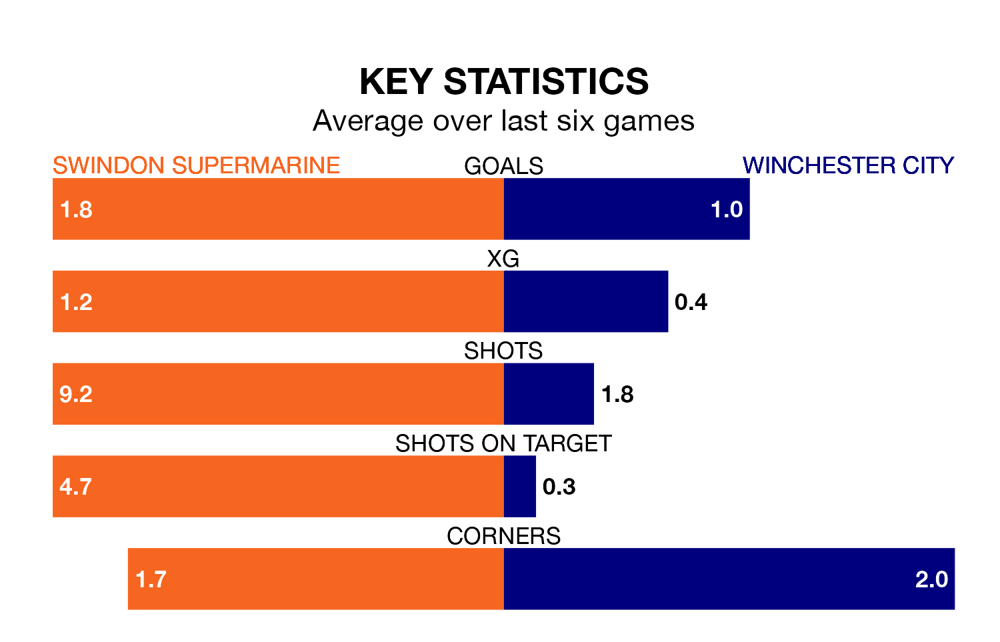

Swindon Supermarine host Winchester City on Saturday at the Webbs Wood Stadium in the Southern League Premier South.
In their last league match, on April 20, Swindon Supermarine lost to Sholing 3-0 away.
Winchester won, 1-0 at home against Beaconsfield Town.
With 70 goals in 41 games so far this season, Swindon Supermarine are scoring more than average in the league with 1.7 goals per game. But they are conceding more than average too, letting in 92 goals at a rate of 2.2 per game.
Winchester, meanwhile, are average scorers, with 1.6 goals per game. They have also conceded 1.6 goals per game.
The home team are 16th in the table after 41 games, of which they have won 12 and drawn 10, earning 46 points.
City are six places ahead of Swindon Supermarine in 10th, with 14 wins and 11 draws putting them on 53 points.
In the last five years, Swindon Supermarine and Winchester have played each other on four occasions. Swindon Supermarine won two of them, Winchester one, and they drew once.
On average, Swindon Supermarine scored 3.5 goals and Winchester 1.2 in those matches.
Their last meeting was on February 6, when they played out a 2-2 draw.
Swindon Supermarine are in mixed form in the Southern League Premier South, with two wins and two draws from their last six games.
With two wins and a draw over that period, the visitors' form is slightly worse – they have taken seven points from 18, compared to the hosts' eight.
Updated: 07:59 (UTC), 26/04/24